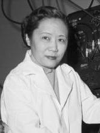

Chien-Shiung Wu

Chien-Shiung Wu in her laboratory — Public domain
Chien-Shiung Wu (1912–1997) was a Chinese-American experimental physicist whose work fundamentally changed modern physics.
She is best known for her role in the experimental verification of the violation of parity conservation, a discovery that reshaped the understanding of fundamental forces in nature.
Key Contributions
- Experimental proof of parity violation in weak interactions
- Major contributions to nuclear physics and beta decay
- Key researcher in the Manhattan Project
- Advanced precision measurement techniques in experimental physics
Timeline
1912 — Born in Jiangsu, China
1936 — Moved to the United States to pursue graduate studies
1956 — Conducted the Wu Experiment on parity violation
1957 — Parity violation confirmed experimentally
1975 — Became the first woman president of the American Physical Society
Why She Matters
Chien-Shiung Wu proved that experimental precision can redefine theoretical physics. Her legacy highlights the essential role of women in advancing the most fundamental questions of science.
References
- American Physical Society — Chien-Shiung Wu
- National Academy of Sciences — Biographical Memoirs
- Columbia University Archives